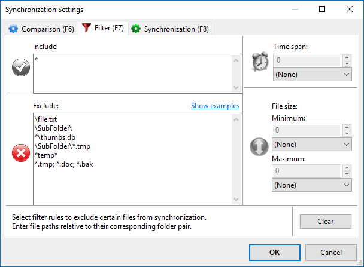

Files and directories are only considered for synchronization if they pass
all filter rules. They have to match at least one entry in the
include list and none of the entries in the exclude list as presented in the filter configuration dialog:
| Filter description | Filter phrase |
|---|---|
| Single file C:\Source\file.txt | \file.txt |
| Single folder C:\Source\SubFolder | \SubFolder\ |
| All files (and folders) named thumbs.db | *\thumbs.db |
| All *.tmp files located in SubFolder | \SubFolder\*.tmp |
| Files and folders containing temp somewhere in their path | *temp* |
| Multiple entries separated by semicolon | *.tmp; *.doc; *.bak |
| All subdirectories of the base directories | *\ |
| *.txt files located in subdirectories of base directories | \*\*.txt |
Set up two folder pairs with the same source and target paths but with distinct local filters:
Folder pair 1; local exclude filter: \SubFolder\
Folder pair 2; local include filter: \SubFolder\*.txt